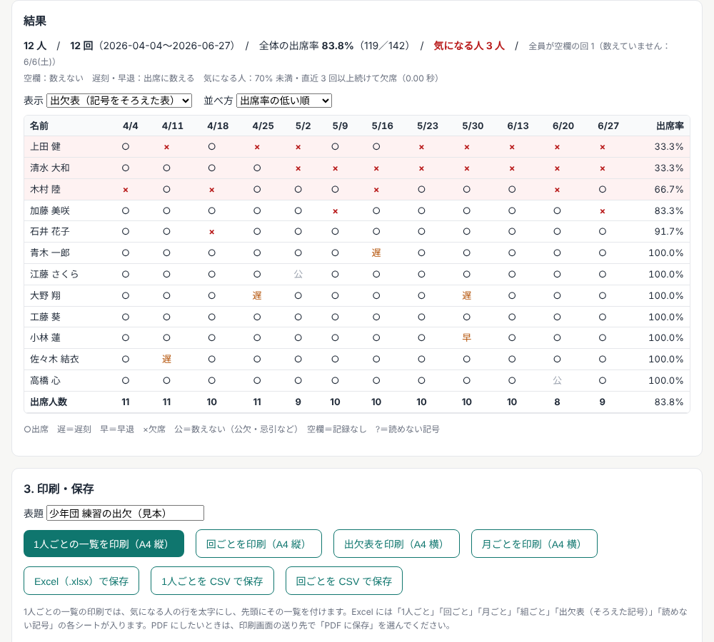

出欠表の出席率の集計
部活・少年団・教室・サークル・研修などの出欠表（名前×日付のマスに「○」「×」「遅」「公」などを書いた表）から、1人ごとの出席率と続けて休んでいる回数を出すツールです。しばらく来ていない人への声かけ、皆勤の確認、出席の少ない月の振り返りに使えます。
- 1人ごと：出席・遅刻・早退・欠席の回数、出席率、最長の連続欠席と直近の連続欠席、最後に出席した日
- 気になる人の一覧：「出席率70%未満」「直近3回以上続けて欠席」のように決めた基準に当たる人（基準は変えられます）
- 回ごと・月ごと・組ごと：日ごとの出席人数と出席率、1人ごとの月別の出席率、学年・クラス・パートごとの出席率
ソフトのインストールは不要で、いつものブラウザで動きます。
お試し版はすべての機能を使えて、数えるのは表の先頭10人までです。決済が終わると、そのまま製品版の画面に移動します。ブックマークしておけば何度でも使えます。

見本のデータ（架空の名前と出欠）で作った例です。
こんなときに
- 紙やスプレッドシートの出欠表を、学期末・年度末に1人ずつ数えて出席率を出している
- 最近続けて休んでいる人に早めに気づいて、声をかけたい
- 出欠表に「○」「〇」「◯」「出」「1」が混ざっていて、COUNTIF で数えると合わない
- 公欠・忌引・休会の回を、出席率の分母から外して数えたい
- フォームやチェックインの記録（来た人の名前と日付だけ）から、休んだ人も含めた出席表を作りたい
できること
- 読める表：①名前×日付の出欠表（名前が縦、日付が横。逆向きの表は「名前が横」にチェック）、②1行に1件の記録（日付・名前・出欠）。②で出欠の列がなければ「来た人だけの記録」とみなし、記録のない人をその日の欠席として数えます（名簿を貼れば、一度も来ていない人も入ります）
- 記号：初めの設定は 出席＝○ 〇 ◯ ◎ 出 1 ✓ レ、遅刻＝遅 △、早退＝早、欠席＝× 欠 0、数えない＝公 忌 免 出停 -。全角・半角の違いは同じとみなし、記号は画面で書き換えられます。読めない記号のマスは場所つきで一覧にします
- 数え方：空欄を「数えない」か「欠席」か、遅刻・早退を出席に数えるかを選べます。全員が空欄の回（休みの日）は自動で外します。期間（開始日〜終了日）も指定できます
- 見出しの日付：「4/5」「4/5(土)」「4月5日」「2026/4/5」、Excel の日付のセル。年のない日付は、月が戻ったところで次の年にします（4月〜翌年3月の年度の表）。「第3回」のような見出しも回として数えます（月ごとの表には入りません）
- 自動で外すもの：「番号」「ふりがな」「合計」「出席率」などの列、「合計」「出席数」の行。同じ名前の行は最初の行を使い、一覧で知らせます
- 印刷と保存：1人ごとの一覧（気になる人を先頭に、A4 縦）、回ごと（A4 縦）、記号をそろえた出欠表（A4 横、24回ずつ）、月ごと（A4 横）。Excel ファイル（.xlsx）には1人ごと・回ごと・月ごと・組ごと・そろえた出欠表のシートが入ります。CSV でも保存できます
- CSV（UTF-8・Shift_JIS）と Excel ファイル（.xlsx）を読めます。Excel の表をコピーして貼り付けても使えます
できないこと（購入前にご確認ください）
- 出欠を取る機能（出席の受付・打刻・連絡）はありません。すでにある出欠表を数えて一覧にするだけです
- 成績・単位・試合の出場資格などの判定はしません。出席率の基準は、使う方が決めて入力します
- 1つのマスに2つ以上の記号（「○遅」など）が書かれていると読めません（「○(遅)」のように括弧で補った形は、括弧の中を使います）
- 「11/23/2026」のような月/日/年の順の日付は読みません
- スマートフォンでは操作しにくいため、パソコンでお使いください
Excel だけで数えるなら
名前が A 列、出欠が B〜M 列（1行目が日付）の表なら、1人ごとの出席の回数（遅刻も出席に数える場合）は
=COUNTIF(B2:M2,"○")+COUNTIF(B2:M2,"遅")
出席率は、欠席も数えて割ります（N 列に上の式があるとき）。
=IFERROR(N2/(N2+COUNTIF(B2:M2,"×")),"")
公欠の「公」や空欄は、どちらの式にも入らないので分母から外れます。日ごとの出席人数は、列ごとに =COUNTIF(B2:B30,"○") です。
注意：COUNTIF は文字がまったく同じものだけを数えます。見た目がそっくりな「○」（まる）と「〇」（漢数字のゼロ）は別の文字なので、混ざっていると数が合いません（表計算ソフトで確かめました）。先に「置換」で1つの記号にそろえてから数えてください。
このツールが向いているのは、記号が人によってばらばら、直近で何回続けて休んでいるかを出したい（式では作りにくい所です）、月ごと・組ごとにも分けたい、来た人だけの記録から欠席を出したい、毎月・毎学期同じ集計をする、といったときです。
よくある質問
| データはどこかに送られますか？ | 送られません。読み込み・集計・印刷・保存はすべてお使いのブラウザの中で行います。記号と数え方の設定だけをブラウザに保存し、名前や出欠は保存しません。 |
|---|---|
| 出席率はどう計算していますか？ | 出席の回数 ÷（出席＋遅刻＋早退＋欠席の回数）です。遅刻・早退を出席に数えない設定では、分母には入れたまま、出席の回数にだけ入れません。「数えない」記号と空欄（初めの設定）は分母に入れません。 |
| 「直近の連続欠席」とは？ | 最後の回からさかのぼって、続けて欠席している回数です。「数えない」の回と空欄の回は飛ばして数えます。最近来なくなった人を見つけるのに使えます。 |
| 何人・何回まで使えますか？ | 製品版は人数・回数の制限はありません（300人×200回の表を0.1秒以内に集計できることを確かめています）。 |
安心してお使いいただくために
- 表はお使いのブラウザの中だけで処理し、サーバーには送信しません
- 動作環境：最新版の Chrome・Safari・Edge・Firefox（パソコン）
- 説明どおりに動かない場合は、ご購入から7日以内にご連絡いただければ返金します
名簿から当番表を作るなら 当番表の自動作成、班やグループに分けるなら 班分け・グループ分け、大会の対戦表なら 総当たりの対戦表づくり もあります。